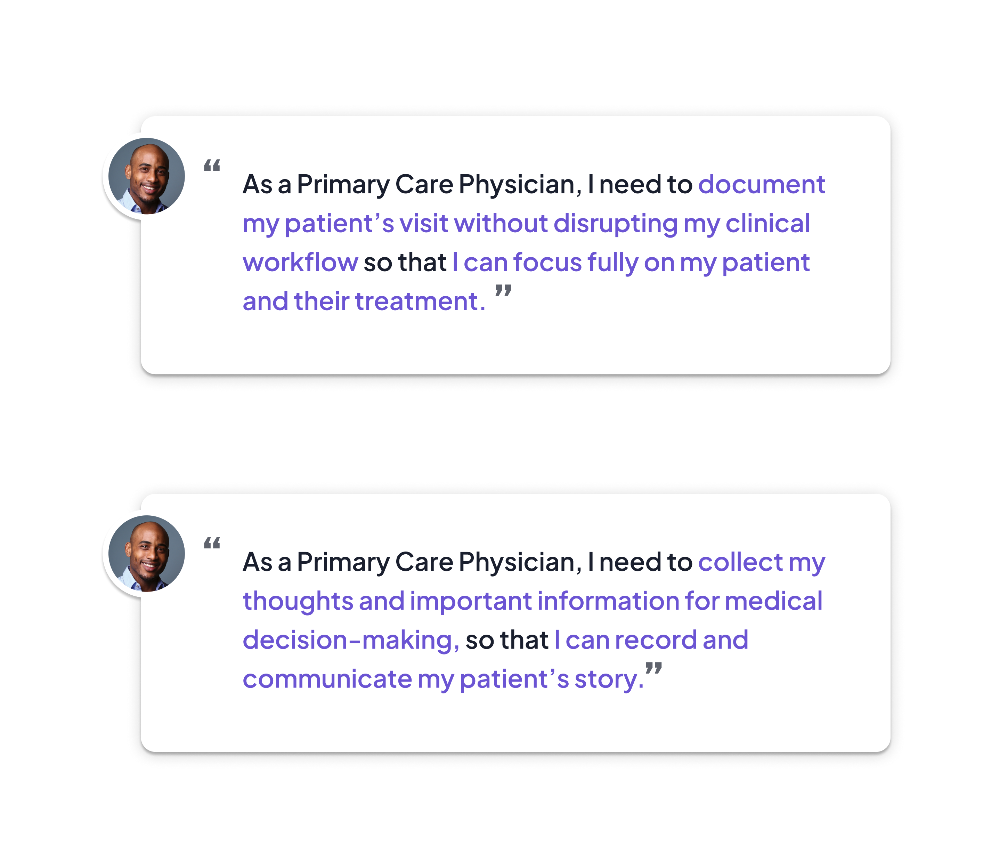
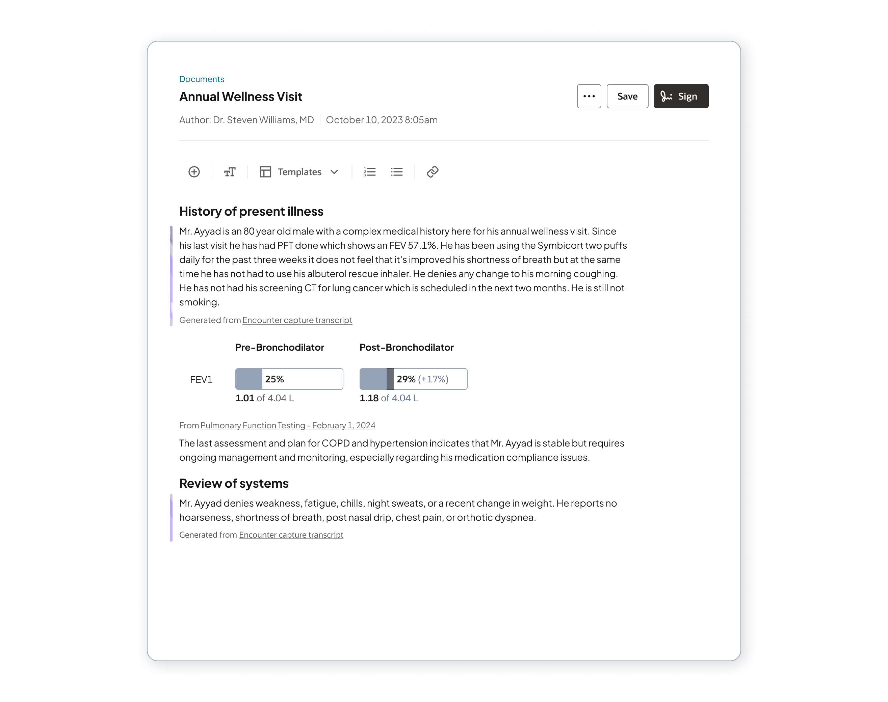
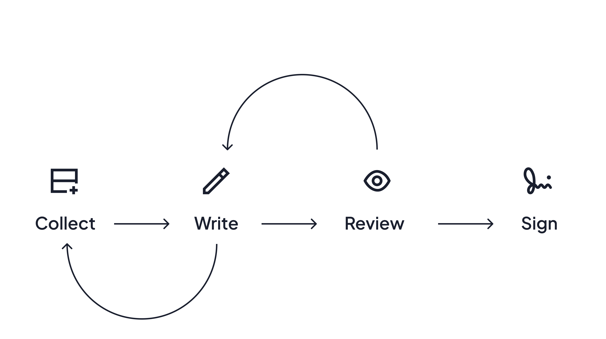
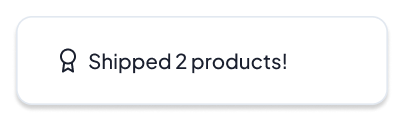
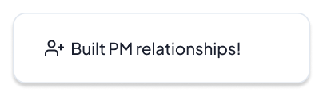
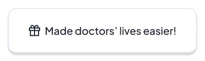

Redesigning clinical documentation for physicians and nurses, embedding AI, voice dictation, and ambient listening into everyday workflows to reduce administrative burden.
Timeline —
Apr 2024 – Oct 2025
18 months
Role —
UX Designer
Team —
Oracle Health Design
Clinical SMEs
Product & Engineering
Skills —
User Research
Design for AI
Enterprise UX
Figma
NDA Note
This project is under NDA. Screens shown here are anonymized — the interaction patterns, design decisions, and design process are real, but all clinical content, patient data, and Oracle branding have been removed. I'd love to share more in a conversation — reach out!
01 Context
Physicians spend nearly half their working hours on documentation — writing notes, updating records, coordinating with other providers — time that has nothing to do with actually caring for patients. It's one of the biggest drivers of burnout in healthcare, and a problem that's remained unsolved for decades. Oracle Health was rebuilding the EHR from scratch, and clinical documentation was one of the most important areas to get right.
I joined as the design lead for clinical documentation, designing how physicians can write notes, use AI-generated summaries, dictate with their voice, and contribute to records across different devices and care settings.
02 Understanding Physicians
I worked closely with physician consultants and human factors researchers, and learned that documentation is a process that weaves in and out of a doctor's workday: in the middle of a patient encounter, quickly in the hallway between visits, or in long hours tacked onto the end of a shift. Documentation is also not in a vacuum; it is a collection of datapoints from across the patient's chart, and needs to describe the physician's internal medical decision-making.
The core issue: physicians need to be detailed and accurate, but they're doing this when they're most pressed for time and mental bandwidth.
So, workflows had to be fast, interruptible, and easy to pick back up. If a physician gets paged mid-note, they shouldn't lose their place or their train of thought when they come back.

03 AI Summarization
Honestly the most exciting part of this project — and also the one that required the most care. The idea was that AI could kickstart a clinical note for you: synthesizing relevant history from the patient record and pulling from what was captured during the encounter via ambient listening, so you're starting from a draft instead of a blank page.
But AI-generated clinical content is high-stakes. A physician can't just blindly accept it; they need to be able to read it critically, catch anything wrong, and make it their own. I designed the experience around transparency and control.
AI-generated content is visually distinct, clearly sourced, and easy to edit inline. The note always ended up reflecting the physician's own judgment. The AI was a draft, and signing it was still a clinical act requiring expertise.

04 Modalities and Multi-tasking
I also designed the voice layer — both traditional dictation and ambient listening, so a clinician can turn on their device in the background and focus fully on the patient. The AI extracts the relevant clinical content afterward, allowing the physician to focus on care and not documentation at all during the visit.
Doctors all work differently, some preferring to use the note as an agenda for the visit, actively referencing it, and some leaving it until the end of the day so they can only think about providing care. Always, they need to collect information around the patient chart - results, vitals, past visits, free-text descriptions of symptoms, images of symptoms.
This led to a crucial flexibility in my designs: creating an optimized view for navigating the chart and working on the note side-by-side. The different modalities of voice, ambient listening, sourcing attachments from the chart, adding AI summarized content, and writing narrative content all need to interconnect seamlessly to work for each physician.


05 Nurse Intake & Charting
About a year in, a second team at Oracle Health reached out — they were redesigning intake and charting for nurses, and wanted me involved. Nurses document very differently from physicians: less narrative, more structured. They work in intake assessments, vitals, medication records — lots of forms and lots of data entry.
The problem was that the legacy experience made nurses navigate through what felt like an endless series of screens to complete a single task. It was tedious, slow, overkill, and a major frustration.
I redesigned these workflows to consolidate related tasks, cut down on redundant data entry by using AI to pre-populate fields where it could, and designed a voice-charting mobile workflow so nurses could move quickly and confidently, keeping their focus on the patient, not the screen.
I built trust with the nursing subject matter experts I worked with over many collaborative sessions — co-presenting directly to provider feedback panels, where our work received more vocal, positive engagement than any concurrent project in review. That feedback directly shaped the next phase of the design, and it was such a pleasure working with our nursing experts!
07 Impact ✨

Led 2 workstreams end-to-end across 18 months, from early research and concept exploration to providing dev support for shipped code.

Recruited mid-project by a second product team based on my reputation for high-impact collaboration! Took on nurse intake and charting as a second parallel workstream, expanding my responsibilities and deepening my understanding of the full clinical system.

Learned from and collaborated with physicians and nurses to build a new EHR that truly meets their needs.
I'd love to go deeper on any part of this work. Let's connect!
Up next: Oracle Patient Portal / Oracle Clinical / Oracle Procurement / Norfolk Southern / Bits of Good / Keeb / Spence